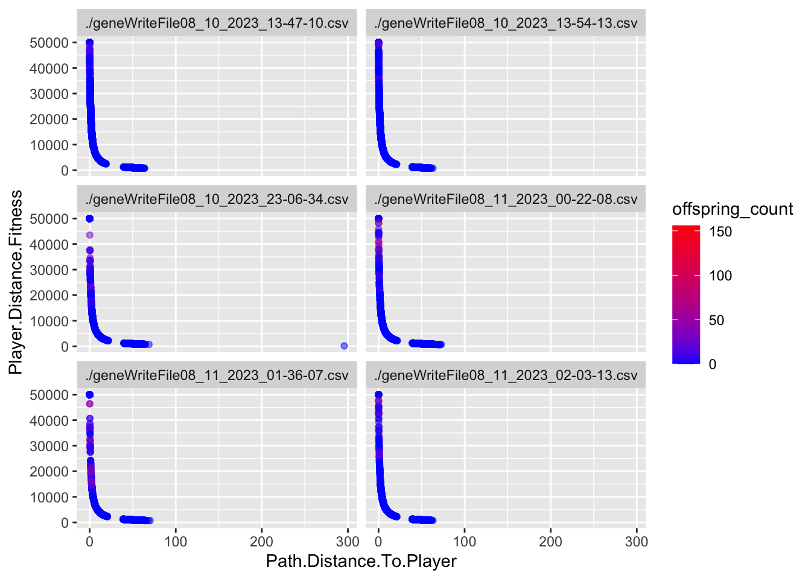

How can we encode a damage resistance game mechanic that interacts well with a generational model of evolution?
Author
Barrie D. Robison
Published
August 9, 2023
Is it really an Evolutionary game?
When we are developing our games, we perform extensive testing to make sure the underlying biological models are performing as expected. In the case of evolutionary games, we need to test that the population of enemies is indeed adapting the game conditions as we intended. This post is (I hope) the first in a series in which we document those tests.
My hope is that performing these tests in this format will serve as an organized archive of our analyses, improving reproducibility and rigor. I also have a vain glimmer of hope that some person other than me might actually be interested in this topic.
PROJECT TWIN STICK
This is intended to be an evolutionary shooter. The game is described in detail here.
DATA
In this section, we ingest the data from whatever runs are relevant to the analysis. The data are written from the project in .csv files. The following code reads all .csv files from the working directory. It creates new variables for the source file name (file) and the number of offspring produced by each individual (offspring_count). It then appends all the data files into a single data frame called allfiles. I also create a few aggregations of the data by generating mean values of interest (traits, genes, fitness estimates) for each generation in each file (TraitAvg, GeneAvg, FitAvg)
Variables that end in .Gene are the values of the genome for that particular locus. Variables that end in .Trait are the values of the trait for that particular locus. Variables that end in .Fitness are the values of that particular Fitness component.
EXPERIMENTAL CONDITIONS
The enemies in this game are slimes of several different types. These types correspond to the different damage types that can be caused by the player’s towers (Lightning, Ice, Fire, etc). Our initial idea is that the slimes of a specific type should be resistant to that type of damage. The average resistance of the whole population should increase over time if the player relies on only one type of tower.
Where Main.Type and Secondary.Type = 1 if they match the Damage Type and 0 if they do not.
Our hypothesis is that resistance of the population will adapt to the damage type of the defense used. If true, this hypothesis predicts that the mean resistance of the population will increase over time, primarily through the proliferation of slimes of a Type that matches the Damage Type.
We constructed a simple defense in the center of the playing area, consisting of three lightning towers. The only Fitness Function at this time is related to Path Distance to the Player (the closer they get to the player, the more fitness they acquire).
RESULTS
Slime Types
Each Slime has a Main.Type and a Secondary.Type. These types use the ~.Resistance.~ category to confer resistance to the appropriate damage type.
The following code creates two summary dataframes with the suffix ~Typecounts that count the number of slimes of each ~.Type in each generation for each replicate. It then creates the graphs of ~Type frequency over time.
Code
MainTypecounts <- allfiles %>%group_by(Main.Type, Generation, file) %>%summarise(Main.count =n(), .groups ="drop")SecondaryTypecounts <- allfiles %>%group_by(Secondary.Type, Generation, file) %>%summarise(Secondary.count =n(), .groups ="drop")ggplot(MainTypecounts, aes(x = Generation, y = Main.count, fill =as.factor(Main.Type))) +geom_col(position ="stack") +labs(x ="Generation", y ="Count", fill ="Main Slime Type") +theme_minimal()+facet_wrap(~file, ncol=2)
Code
ggplot(SecondaryTypecounts, aes(x = Generation, y = Secondary.count, fill =as.factor(Secondary.Type))) +geom_col(position ="stack") +labs(x ="Generation", y ="Count", fill ="Secondary Slime Type") +theme_minimal()+facet_wrap(~file, ncol=2)
These results align with the predictions of our hypothesis. There is an obvious proliferation of Lightning type slimes (both Main and Secondary) in all 6 replicates.
Slime Fitness
In most cases, it is useful to summarize the behavior of the fitness function for each experiment. In this case, the fitness function calculates a value of 50,000/(distance to player +1). I will also reverse calculate that for visualization, showing the actual distance to the player (Path.Distance.To.Player). We then use Roulette Wheel selection to determine the parents of the next generation.
Code
ggplot(allfiles, aes(x=Wave.Number, y= Path.Distance.To.Player))+geom_jitter(aes(x=Wave.Number, y= Path.Distance.To.Player, color = offspring_count, alpha = offspring_count))+geom_smooth()+facet_wrap(~file, ncol =2)+scale_color_continuous(low="blue", high ="red")+ylim(0, 80)
`geom_smooth()` using method = 'gam' and formula = 'y ~ s(x, bs = "cs")'
Warning: Computation failed in `stat_smooth()`
Caused by error in `smooth.construct.cr.smooth.spec()`:
! x has insufficient unique values to support 10 knots: reduce k.
This is a jitter plot, which helps prevent overplotting of all the points. The Y axis appears to be messed up because there was one slime in one replicate that died very far away from the player (value of 300). I’ve limited the axis to make the plots more readable. There is also a bug that sets the path distance to 0 in generation 0, and Justin is working on that.
In a plot like this, we expect to see that points closer to 0 on the y axis are more opaque and red, indicating that those individuals had more offspring. Looks pretty good in that regard. We also note that there are obviously two groups of slimes - one that dies far away and one that gets pretty close.
Code
ggplot(allfiles, aes(x=Wave.Number, y=log10(Player.Distance.Fitness)))+geom_jitter(aes(x=Wave.Number, y=log10(Player.Distance.Fitness), color = offspring_count, alpha = offspring_count))+geom_smooth()+facet_wrap(~file, ncol =2)+scale_color_continuous(low="blue", high ="red")
`geom_smooth()` using method = 'gam' and formula = 'y ~ s(x, bs = "cs")'
Warning: Computation failed in `stat_smooth()`
Caused by error in `smooth.construct.cr.smooth.spec()`:
! x has insufficient unique values to support 10 knots: reduce k.
This plot is the same general concept as the previous one, but I am using the transformed values for fitness. I’ve log transformed because of the distribution created by the transformation (something we’ll have to address in development I think). In this case, points near the top should be more red if the fitness function is working.
Code
ggplot(allfiles, aes(x=Path.Distance.To.Player, y = Player.Distance.Fitness))+geom_point(aes(x=Path.Distance.To.Player, y = Player.Distance.Fitness, color = offspring_count), alpha =0.5)+facet_wrap(~file, ncol =2)+scale_color_continuous(low="blue", high ="red")

This is the relationship between true path distance and transformed values. I think this is going to be a problem. The function creates a weird distribution for fitness values.
Code
ggplot(allfiles, aes(x=log10(Path.Distance.To.Player), y =log10(Player.Distance.Fitness)))+geom_point(aes(x=log10(Path.Distance.To.Player), y =log10(Player.Distance.Fitness), color = offspring_count), alpha =0.5)+facet_wrap(~file, ncol =2)+scale_color_continuous(low="blue", high ="red")
This is the log plot of the two variables, which suggests we might consider using log10(Fitness) during the selection step?
ggplot(allfiles, aes(x =as.factor(Wave.Number), y =log10(offspring_count+1))) +geom_boxplot(fill="lightblue") +theme(legend.position ="none")+facet_wrap(~file, ncol =2)
These two plots help us understand the relationship between the fitness function and the TRUE measure of fitness - number of offpring. The first plot shows us the variance in offspring_count for each Generation. High variance indicates that not all individuals have an equal probability of mating, which is indicative that selection is acting on the population.
The second plot is a box plot of offspring_count by Generation, which gives us an idea of what the distribution looks like.
Overall, I’d say these game conditions create selection in the early game, between Generation 1 and 3. The question is, what TRAITS are associated with this variation in Fitness?
Evolutionary Responses
To estimate what traits might be under selection, we can calculate selection gradients for each trait. This is essentially the slope of the line between offspring_count and the Trait.
For each Trait, we should also try to understand its individual evolutionary trajectory. Is the population mean for the trait increasing or decreasing?
Since the first thing we are interested in is Damage Resistance conferred by Type, we’ll calculate Lightning resistance directly.
`stat_bin()` using `bins = 30`. Pick better value with `binwidth`.
Code
ggplot(singlegen, aes(x=Turn.Rate.Trait, y = Speed.Trait, color = reproduce))+geom_point()+facet_wrap(~file)
Source Code
---title: "Testing Evolution in Project TwinStick"subtitle: "1 - The Evolution of Damage Resistance"description: "How can we encode a damage resistance game mechanic that interacts well with a generational model of evolution?"author: "Barrie D. Robison"date: "August 9, 2023"code-fold: true code-tools: true---Is it really an *Evolutionary* game?When we are developing our games, we perform extensive testing to make sure the underlying biological models are performing as expected. In the case of evolutionary games, we need to test that the population of enemies is indeed adapting the game conditions as we intended. This post is (I hope) the first in a series in which we document those tests.My hope is that performing these tests in this format will serve as an organized archive of our analyses, improving reproducibility and rigor. I also have a vain glimmer of hope that some person other than me might actually be interested in this topic.## PROJECT TWIN STICKThis is intended to be an evolutionary shooter. The game is described in detail [here](../Games/TwinStick/index.qmd).## DATAIn this section, we ingest the data from whatever runs are relevant to the analysis. The data are written from the project in `.csv` files. The following code reads all `.csv` files from the working directory. It creates new variables for the source file name (`file`) and the number of offspring produced by each individual (`offspring_count`). It then appends all the data files into a single data frame called `allfiles`. I also create a few aggregations of the data by generating mean values of interest (traits, genes, fitness estimates) for each generation in each file (`TraitAvg`, `GeneAvg`, `FitAvg`)```{r}#| output: falselibrary(tidyverse)library(pheatmap)files <-list.files(pattern ="*.csv", full.names =TRUE)allfiles =data.frame()for(csv in files){ Twin3 <-read.csv(csv, as.is=T, header=T) Twin3['file'] = csvTwin3<-Twin3%>%mutate(Unique.Slime.ID =paste(Wave.Number, ".", Slime.ID))%>%mutate(Unique.Parent.One =paste(Wave.Number-1, ".", Parent.One))%>%mutate(Unique.Parent.Two =paste(Wave.Number-1, ".", Parent.Two))df_parents <- Twin3 %>%select(Unique.Parent.One, Unique.Parent.Two) %>%pivot_longer(cols =everything(), names_to ="parent_type", values_to ="parent_id")# Count the number of offspring for each parentoffspring_counts <- df_parents %>%group_by(parent_id) %>%summarise(offspring_count =n(), .groups ="drop")offspring_counts <- offspring_counts%>%filter(parent_id !="-1 . N/A")offspring_counts<-rename(offspring_counts, Unique.Slime.ID = parent_id)Twin3 <- Twin3 %>%left_join(offspring_counts, by ="Unique.Slime.ID")%>%replace_na(list(offspring_count =0))allfiles<-rbind(allfiles,Twin3)}Traits <-c("Main.Resistance.Trait", "Secondary.Resistance.Trait", "Speed.Trait","Tower.Attraction.Trait", "Slime.Optimal.Distance.Trait", "Turn.Rate.Trait", "Slime.View.Range.Trait", "Tower.View.Range.Trait")Genes <-c("Main.Resistance.Gene", "Secondary.Resistance.Gene", "Speed.Gene","Tower.Attraction.Gene", "Slime.Optimal.Distance.Gene", "Turn.Rate.Gene", "Slime.View.Range.Gene", "Tower.View.Range.Gene")allfiles<-allfiles%>%mutate(Generation=as.factor(Wave.Number))%>%mutate(offspring.count.Fitness = offspring_count)%>%mutate(reproduce =if_else(offspring_count ==0, "N", "Y"))TraitAvg <- allfiles %>%group_by(file, Generation) %>%summarize(across(ends_with("Trait"), mean, na.rm =TRUE))GeneAvg <- allfiles %>%group_by(file, Generation) %>%summarize(across(ends_with("Gene"), list(mean = mean, var = var), na.rm =TRUE, .names ="{.fn}.{.col}"))FitAvg <- allfiles %>%group_by(file, Generation) %>%summarize(across(ends_with("Fitness"), list(mean = mean, var = var), na.rm =TRUE, .names ="{.fn}.{.col}"))```The `allfiles` dataframe contains the following variables (I also show a few columns of the example data):```{r}data.dictionary <-t(as.data.frame(head(allfiles)))knitr::kable(data.dictionary)```Variables that end in `.Gene` are the values of the genome for that particular locus. Variables that end in `.Trait` are the values of the trait for that particular locus. Variables that end in `.Fitness` are the values of that particular Fitness component.## EXPERIMENTAL CONDITIONSThe enemies in this game are slimes of several different types. These types correspond to the different damage types that can be caused by the player's towers (Lightning, Ice, Fire, etc). Our initial idea is that the slimes of a specific type should be resistant to that type of damage. The average resistance of the whole population should increase over time if the player relies on only one type of tower.The current resistance model is as follows:Damage Resistance = (Main.Type)0.6 + (Secondary.Type)0.4Where Main.Type and Secondary.Type = 1 if they match the Damage Type and 0 if they do not.Our hypothesis is that resistance of the population will adapt to the damage type of the defense used. If true, this hypothesis predicts that the mean resistance of the population will increase over time, primarily through the proliferation of slimes of a Type that matches the Damage Type.We constructed a simple defense in the center of the playing area, consisting of three lightning towers. The only Fitness Function at this time is related to Path Distance to the Player (the closer they get to the player, the more fitness they acquire).## RESULTS### Slime TypesEach Slime has a `Main.Type` and a `Secondary.Type`. These types use the `~.Resistance.~` category to confer resistance to the appropriate damage type.The following code creates two summary dataframes with the suffix `~Typecounts` that count the number of slimes of each `~.Type` in each generation for each replicate. It then creates the graphs of `~Type` frequency over time.```{r}MainTypecounts <- allfiles %>%group_by(Main.Type, Generation, file) %>%summarise(Main.count =n(), .groups ="drop")SecondaryTypecounts <- allfiles %>%group_by(Secondary.Type, Generation, file) %>%summarise(Secondary.count =n(), .groups ="drop")ggplot(MainTypecounts, aes(x = Generation, y = Main.count, fill =as.factor(Main.Type))) +geom_col(position ="stack") +labs(x ="Generation", y ="Count", fill ="Main Slime Type") +theme_minimal()+facet_wrap(~file, ncol=2)ggplot(SecondaryTypecounts, aes(x = Generation, y = Secondary.count, fill =as.factor(Secondary.Type))) +geom_col(position ="stack") +labs(x ="Generation", y ="Count", fill ="Secondary Slime Type") +theme_minimal()+facet_wrap(~file, ncol=2)```These results align with the predictions of our hypothesis. There is an obvious proliferation of Lightning type slimes (both Main and Secondary) in all 6 replicates.## Slime FitnessIn most cases, it is useful to summarize the behavior of the fitness function for each experiment. In this case, the fitness function calculates a value of 50,000/(distance to player +1). I will also reverse calculate that for visualization, showing the actual distance to the player (`Path.Distance.To.Player`). We then use Roulette Wheel selection to determine the parents of the next generation.```{r}ggplot(allfiles, aes(x=Wave.Number, y= Path.Distance.To.Player))+geom_jitter(aes(x=Wave.Number, y= Path.Distance.To.Player, color = offspring_count, alpha = offspring_count))+geom_smooth()+facet_wrap(~file, ncol =2)+scale_color_continuous(low="blue", high ="red")+ylim(0, 80)```This is a jitter plot, which helps prevent overplotting of all the points. The Y axis appears to be messed up because there was one slime in one replicate that died very far away from the player (value of 300). I've limited the axis to make the plots more readable. There is also a bug that sets the path distance to 0 in generation 0, and Justin is working on that.In a plot like this, we expect to see that points closer to 0 on the y axis are more opaque and red, indicating that those individuals had more offspring. Looks pretty good in that regard. We also note that there are obviously two groups of slimes - one that dies far away and one that gets pretty close.```{r}ggplot(allfiles, aes(x=Wave.Number, y=log10(Player.Distance.Fitness)))+geom_jitter(aes(x=Wave.Number, y=log10(Player.Distance.Fitness), color = offspring_count, alpha = offspring_count))+geom_smooth()+facet_wrap(~file, ncol =2)+scale_color_continuous(low="blue", high ="red")```This plot is the same general concept as the previous one, but I am using the transformed values for fitness. I've log transformed because of the distribution created by the transformation (something we'll have to address in development I think). In this case, points near the top should be more red if the fitness function is working.```{r}ggplot(allfiles, aes(x=Path.Distance.To.Player, y = Player.Distance.Fitness))+geom_point(aes(x=Path.Distance.To.Player, y = Player.Distance.Fitness, color = offspring_count), alpha =0.5)+facet_wrap(~file, ncol =2)+scale_color_continuous(low="blue", high ="red")```This is the relationship between true path distance and transformed values. I think this is going to be a problem. The function creates a weird distribution for fitness values.```{r}ggplot(allfiles, aes(x=log10(Path.Distance.To.Player), y =log10(Player.Distance.Fitness)))+geom_point(aes(x=log10(Path.Distance.To.Player), y =log10(Player.Distance.Fitness), color = offspring_count), alpha =0.5)+facet_wrap(~file, ncol =2)+scale_color_continuous(low="blue", high ="red")```This is the log plot of the two variables, which suggests we might consider using log10(Fitness) during the selection step?```{r}ggplot(data = FitAvg, aes(x = Generation, y = var.offspring.count.Fitness))+geom_col()+theme(legend.position ="none") +facet_wrap(~file, ncol =2) ggplot(allfiles, aes(x =as.factor(Wave.Number), y =log10(offspring_count+1))) +geom_boxplot(fill="lightblue") +theme(legend.position ="none")+facet_wrap(~file, ncol =2)```These two plots help us understand the relationship between the fitness function and the TRUE measure of fitness - number of offpring. The first plot shows us the variance in `offspring_count` for each Generation. High variance indicates that not all individuals have an equal probability of mating, which is indicative that selection is acting on the population.The second plot is a box plot of `offspring_count` by Generation, which gives us an idea of what the distribution looks like.Overall, I'd say these game conditions create selection in the early game, between Generation 1 and 3. The question is, what TRAITS are associated with this variation in Fitness?## Evolutionary ResponsesTo estimate what traits might be under selection, we can calculate selection gradients for each trait. This is essentially the slope of the line between `offspring_count` and the Trait.For each Trait, we should also try to understand its individual evolutionary trajectory. Is the population mean for the trait increasing or decreasing?Since the first thing we are interested in is Damage Resistance conferred by Type, we'll calculate Lightning resistance directly.```{r}allfiles <- allfiles %>%mutate(LResist.Trait =case_when( Main.Type =="Lightning"& Secondary.Type =="Lightning"~1.0, Main.Type =="Lightning"& Secondary.Type !="Lightning"~0.6, Main.Type !="Lightning"& Secondary.Type =="Lightning"~0.4,TRUE~0 ))traittemp <- allfiles %>%select(Generation, offspring_count, file, LResist.Trait) %>%group_by(Generation, file) %>%mutate(scaleST0 =as.vector(scale(LResist.Trait, center =TRUE))) %>%mutate(scaleST02 = scaleST0 * scaleST0) %>%mutate(Generation =as.numeric(as.character(Generation)))Gradients <- traittemp %>%group_by(Generation, file) %>%do({ model <-lm(offspring_count ~ scaleST0 + scaleST02, data = .)data.frame(Beta =coefficients(model)[2],PB =summary(model)$coef[2, 4],Trait ="LResist.Trait" ) })Gradients <- Gradients %>%mutate(sig =if_else(PB <0.05 , "Y", "N"))TraitAvg <- allfiles %>%group_by(file, Generation) %>%summarize(across(ends_with("Trait"), mean, na.rm =TRUE))ggplot(data = TraitAvg, aes(x =as.numeric(Generation), y = LResist.Trait))+geom_smooth(data = TraitAvg, aes(x =as.numeric(Generation), y = LResist.Trait), method ="loess") +theme(legend.position ="none") +facet_wrap(~file, ncol =2) ggplot(Gradients, aes(x=Generation, y = Beta))+geom_point(aes(color = sig))+geom_smooth(fill="blue")+scale_color_manual(values =c("grey","red"))+geom_hline(yintercept=0, linetype="dashed", color ="black")+theme(legend.position ="none",panel.background =element_blank())```Now we'll perform a similar analysis for the remaining traits.```{r}Gradientslong <-data.frame()for(i inseq_along(Traits)){traittemp<-allfiles%>%select(Generation, offspring_count, file, !!sym(Traits[i]))%>%group_by(Generation, file)%>%mutate(scaleST0 =as.vector(scale(!!sym(Traits[i]), center =TRUE)))%>%mutate(scaleST02 = scaleST0*scaleST0)%>%mutate(Generation =as.numeric(as.character(Generation)))Gradients <- traittemp %>%group_by(Generation, file) %>%do({ model <-lm(offspring_count ~ scaleST0 + scaleST02, data = .)data.frame(Beta =coefficients(model)[2],PB =summary(model)$coef[2, 4],Trait = Traits[i] ) })Gradients <- Gradients %>%mutate(sig =if_else(PB <0.05 , "Y", "N"))Gradientslong <-rbind(Gradientslong, Gradients)G <-ggplot(data = GeneAvg, aes(x =as.numeric(Generation), y =!!sym(Genes[i])))+geom_point(data = allfiles, aes(x =as.numeric(Generation), y =!!sym(Genes[i])), size=0.1, alpha =0.02)+geom_smooth(data = GeneAvg, aes(x =as.numeric(Generation), y =!!sym(paste("mean.",Genes[i], sep ="")), method ="loess")) +theme(legend.position ="none") +facet_wrap(~file, ncol =2) P <-ggplot(data = TraitAvg, aes(x =as.numeric(Generation), y =!!sym(Traits[i])))+geom_smooth(data = TraitAvg, aes(x =as.numeric(Generation), y =!!sym(Traits[i])), method ="loess") +geom_point(data=allfiles, aes(x =as.numeric(Generation), y =!!sym(Traits[i]), color = offspring_count), size =0.5, alpha =0.1)+theme(legend.position ="none") +facet_wrap(~file, ncol =2) S <-ggplot(Gradients, aes(x=Generation, y = Beta))+geom_point(aes(color = sig))+geom_smooth(fill="blue")+scale_color_manual(values =c("grey","red"))+geom_hline(yintercept=0, linetype="dashed", color ="black")+theme(legend.position ="none",panel.background =element_blank())print(G)print(P)print(S)}```## Heatmap```{r}GradMatrix <- Gradientslong %>%select(Generation, Trait, Beta)%>%pivot_wider(names_from = Trait, values_from = Beta)paletteLength <-50myColor <-colorRampPalette(c("blue", "white", "#ED2024"))(paletteLength)# length(breaks) == length(paletteLength) + 1# use floor and ceiling to deal with even/odd length pallettelengthsHeatmap <- GradMatrix %>%ungroup()%>%select(Main.Resistance.Trait, Secondary.Resistance.Trait, Slime.View.Range.Trait, Tower.View.Range.Trait, Tower.Attraction.Trait, Slime.Optimal.Distance.Trait, Speed.Trait, Turn.Rate.Trait)Heatmatrix2 <-as.matrix(Heatmap)myBreaks2 <-c(seq(min(Heatmatrix2), 0, length.out=ceiling(paletteLength/2) +1), seq(max(Heatmatrix2)/paletteLength, max(Heatmatrix2), length.out=floor(paletteLength/2)))heatmap2 =pheatmap(Heatmatrix2,cluster_rows =FALSE, # don't cluster rowscluster_cols =TRUE, # don't cluster columnsclustering_distance_cols ="euclidean",clustering_distance_rows ="euclidean",clustering_method ="complete",color = myColor,breaks = myBreaks2)```## SINGLE GENERATION PLOTS```{r}singlegen <- allfiles %>%filter(Generation ==5)singlegrad <- Gradientslong %>%filter(Generation ==3)ggplot(singlegen, aes(x=Speed.Trait) )+geom_histogram()+facet_grid(reproduce~file)ggplot(singlegen, aes(x=Turn.Rate.Trait) )+geom_histogram()+facet_grid(reproduce~file)ggplot(singlegen, aes(x=Turn.Rate.Trait, y = Speed.Trait, color = reproduce))+geom_point()+facet_wrap(~file)```